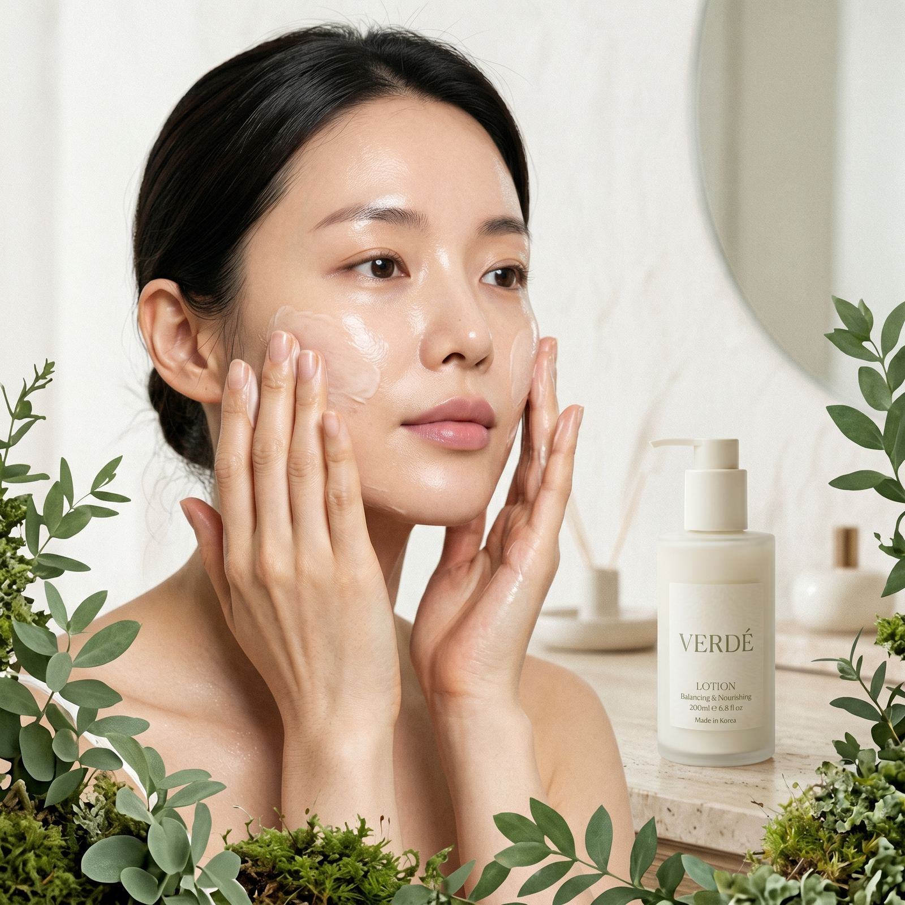
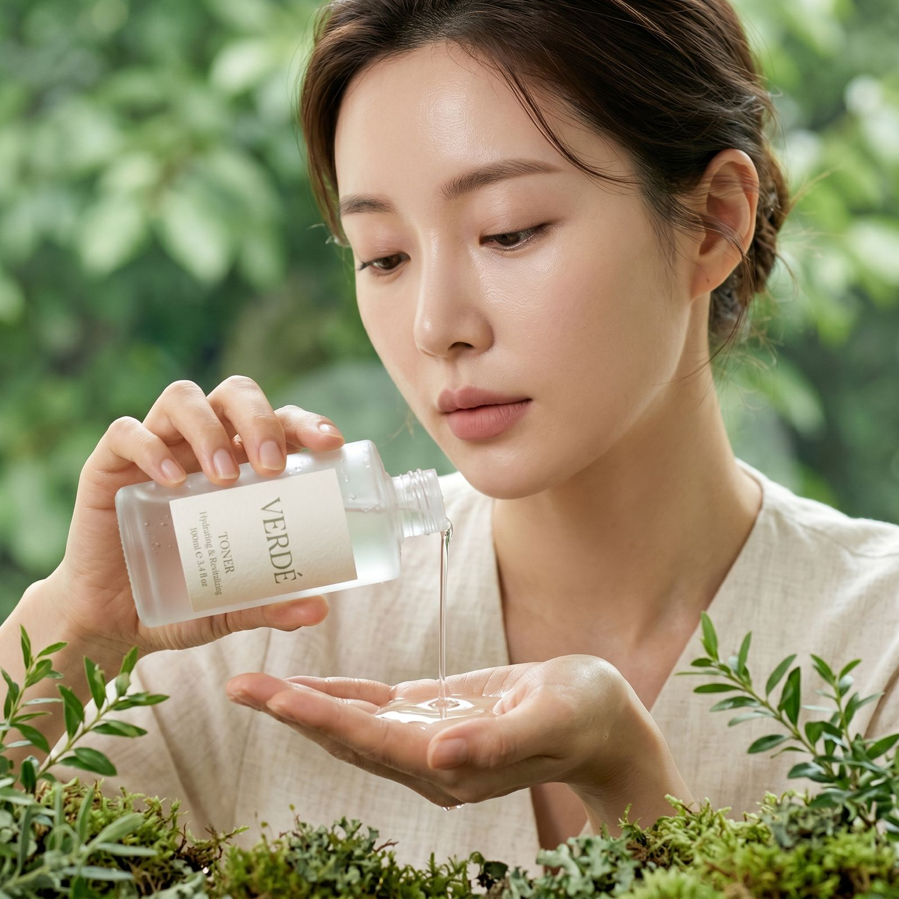

Brand


VERDÉ는 "Forest Recovery"라는 키워드 아래, 숲이 스스로를 회복시키는 순환의 힘을 피부에 적용합니다. 손상된 피부도 적절한 환경과 최소한의 개입만 있으면 본래의 균형을 되찾을 수 있다고 믿습니다.
그래서 VERDÉ의 모든 제품은 "더하는 케어"가 아닌 "회복을 돕는 케어"를 목표로 설계되었습니다. 자극적인 활성 성분 대신, 피부 장벽이 스스로 제 역할을 할 수 있도록 돕는 식물 유래 성분을 중심으로 포뮬러를 구성합니다.
성분 사전 둘러보기VERDÉ는 화려한 마케팅 카피 대신, 왜 이 성분이 들어갔고 어떤 역할을 하는지를 먼저 이야기합니다. 불필요한 것을 걷어낸 자리에 진짜 필요한 것만 남기는 것 — 그것이 VERDÉ가 정의하는 케어입니다.
손상된 피부 장벽이 스스로 회복할 수 있도록 돕는 미니멀 포뮬러. 병풀, 판테놀 등 진정·재생 성분을 중심으로 설계했습니다.
불필요한 향료, 색소, 자극적인 활성 성분을 덜어내고 핵심 성분만 고농축으로 담아 적은 단계로도 충분한 케어를 완성합니다.
전성분과 추출 원료, 민감성 피부 적합도까지 투명하게 공개하고 성분 사전을 통해 누구나 쉽게 확인할 수 있도록 합니다.

VERDÉ의 패키지는 재생지와 유리 용기를 기본으로 하며, 전 제품에 리필 옵션을 제공합니다. 한 번 구매한 본품 용기를 계속 사용하고 내용물만 다시 채우는 방식으로, 불필요한 포장 폐기물을 줄입니다.
리필 구독 시 멤버십 등급에 따라 최대 15%까지 할인되며, 마이페이지에서 주기 변경과 일시정지를 자유롭게 관리할 수 있습니다. 작은 선택이 모여 숲을 지키는 순환이 되도록, VERDÉ는 패키지부터 다시 설계했습니다.
리필 전용관 보기VERDÉ가 그리는 숲의 세계관과 성분 이야기를 저널에서 더 깊이 만나보세요. 매주 새로운 이야기가 업데이트됩니다.